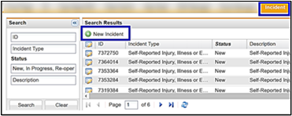
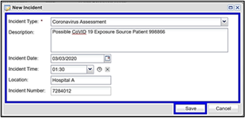
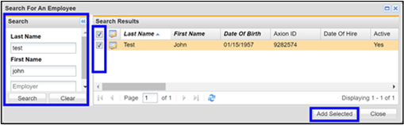
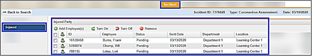
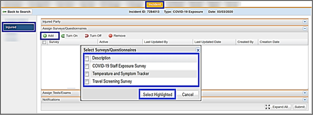
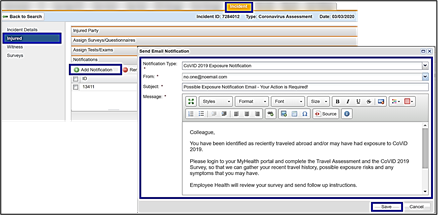

Using Incident Management to Track a Coronavirus (COVID-19) Exposure
When to use:
For a Coronavirus (COVID-19) exposure incident involving multiple contacts at a facility.
For one or more exposures where incident reporting is required (OSHA or Workers’ Comp).
Creating a New Coronavirus (COVID-19) Exposure Incident
On the Incident Managementtab, click New Incident.

In the New Incident window, select the designated exposure in the Incident Type field.
Enter a brief and meaningful Description.
Select the Incident Date and Incident Time.
Enter the Location.
Enter the Incident Number. You can choose a number in an existing series of incident numbers at your facility or create your own. Each incident number must be unique, or you will receive an error message when you try to save the new incident.
Click Save to create the new incident.

Adding Individual Participants to a New Incident
From the Incident, click Injured in the left menu.
Click Add Employee(s).
Search for the participant(s) using name, department, etc.
In the Search Results window, select the checkbox next to the participant(s) you want to add.
Click Select Highlighted to add this individual to this incident. Continue adding until all exposed participants are added.
Click Add Selected.

The participant(s) display in the Injuredwindow. There is also an icon to Jump to Chart.

Adding Surveys and Notifications for Multiple Participants
From the Incident,click Injured in the left menu.
Click the plus sign to the right of the Assign Surveys/Questionnaires pane to expand it.
Click Add.
Select the surveys/questionnaires you want to add, then click Select Highlighted to add the survey(s) for the selected participants.

Click the plus sign to the right of the Notifications pane to expand it.
ClickAdd Notification.
Select the Notification Type and complete the required fields.
Click Save.

If you are ready to activate these items for the participants, click Submit.